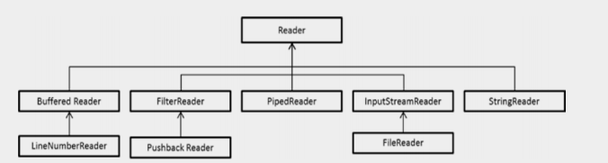
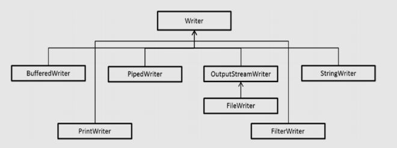
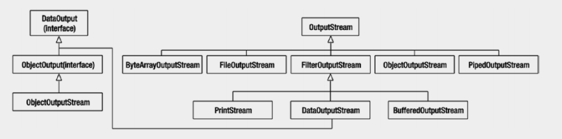
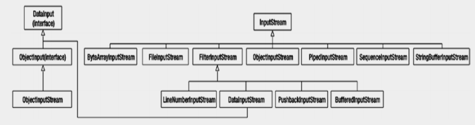

<!DOCTYPE html>
 <html lang="pt-br">

  <head>
 <meta http-equiv="Content-Type" content="text/html;charset=UTF-8" >
<meta name="viewport" content="width=device-width, initial-scale=1">
<link rel="stylesheet" href="css/font-awesome/css/font-awesome.min.css">
 <link rel="stylesheet" type="text/css" href="css/stylos.css">
 <link rel="stylesheet" href="css/stylew3.css">
 <script type="text/javascript"src="js/efeitos.js"></script>
 <link rel="stylesheet" type="text/css" href="code-brush-master/tyrm.css" media="all" />
<script src="code-brush-master/cbCore.js"></script>
<script src="code-brush-master/cBrushXml.js"></script>
<script src="code-brush-master/cBrushCss.js"></script>
<script src="code-brush-master/cBrushPhp.js"></script>
<script src="code-brush-master/cBrushSql.js"></script>
<script src="code-brush-master/cBrushJScript.js"></script>   
<script src="code-brush-master/cBrushJava.js"></script>  
<script>
    SyntaxHighlighter.defaults['auto-links'] = false;
    SyntaxHighlighter.defaults['toolbar'] = false;
    SyntaxHighlighter.all();
</script>
 <title> Programar em Java</title>
 </head>
 <body>
 

<!-- Top Navigation Menu -->

  <div id="voltarTopo">
  <a href="#" id="subir">Topo</a>
</div>

<nav class="w3-sidebar w3-bar-block w3-collapse w3-animate-left w3-card" style="z-index:3;width:250px;" id="mySidebar">
  <!--<a class="w3-bar-item w3-button w3-border-bottom w3-large" href="#"></a>-->
  <a class="w3-bar-item w3-button w3-hide-large w3-large" href="javascript:void(0)" onclick="w3_close()">Close <i class="fa fa-remove"></i></a>
  <a class="w3-bar-item w3-button w3-teal" href="index.html">Home</a>
       <a class="w3-bar-item w3-button"  href="#javaiofund">14- JAVA I/O FUNDAMENTAL</a>
            <a class="w3-bar-item w3-button"  href="#lerescrevercons">Lendo e Escrevendo no Console</a>
          <a class="w3-bar-item w3-button"  href="#padraostream">Entendendo o padrão Stream</a>
          <a class="w3-bar-item w3-button"  href="#reatfluxopd">Reatribuição de fluxos padrão</a>
          <a class="w3-bar-item w3-button" href="#classeconsole">Entendendo a Classe Console</a>
          <a class="w3-bar-item w3-button"  href="#formatsaida">Saída formatada com a Classe de Console</a>
          <a class="w3-bar-item w3-button"  href="#entradaclasse">Obtendo entrada com a classe do console </a>
          <a class="w3-bar-item w3-button"  href="#fluxolergravar">Usando fluxos para ler e gravar arquivos</a>
           <a class="w3-bar-item w3-button"  href="#fluxocaractbyt">Fluxos de caracteres e fluxos de bytes</a>
          <a class="w3-bar-item w3-button"  href="#fluxocaracter">Fluxo de Caracteres</a>
           <a class="w3-bar-item w3-button"  href="#lerarquivotext">Lendo Arquivos de Textos</a>
          <a class="w3-bar-item w3-button"  href="#lerescreverarquivo">Lendo e Escrevendo arquivo texto</a>
          <a class="w3-bar-item w3-button"  href="#tokenizetext">Text Tokenizing</a>
          <a class="w3-bar-item w3-button"  href="#fluxobytes">Fluxo de Bytes</a>
          <a class="w3-bar-item w3-button"  href="#lerfluxobytes">Lendo um Fluxo de Bytes</a>
          <a class="w3-bar-item w3-button"  href="#fluxodados">Fluxo de Dados</a>
          <a class="w3-bar-item w3-button"  href="#writereadfluxbj">Escrevendo e lendo de fluxos de objetos</a>
           
  
  <div>
    <a class="w3-bar-item w3-button" onclick="myAccordion('demo')" href="javascript:void(0)">Mapa de Links <i class="fa fa-caret-down"></i></a>
    <div id="demo" class="w3-hide">

   
<a class="w3-bar-item w3-button" href= "estruturadojava.html">1 - A Estrutura do Java</a>
     <a class="w3-bar-item w3-button" href="operadorjava.html">2 - Operadores em java</a>

<a class="w3-bar-item w3-button" href="apijava.html">3 - APIs Java</a>
<a class="w3-bar-item w3-button" href=" metodoenc.html">4 - Métodos e Encapsulamento</a>

<a class="w3-bar-item w3-button" href="designdeclasse.html">5 - Design de Classe </a>
<a class="w3-bar-item w3-button" href="excecao.html">6 - Exceções</a>

<a class="w3-bar-item w3-button" href="designavancado.html">7 - Design de Classe I</a>
<a class="w3-bar-item w3-button" href="designdeclasseavancado.html">8 - Design de Classe Avançado</a>
<a class="w3-bar-item w3-button" href=" colecaogeneric.html">9 - Generics E Collection</a>
<a class="w3-bar-item w3-button" href="lambda.html">10 - Interfaces Funcionais embutidas do Lambda </a>
<a class="w3-bar-item w3-button" href="apistream.html">11- Java Stream API</a>

<a class="w3-bar-item w3-button" href="exceptioassertion.html">12 - Exceções Asserçoes</a>
<a class="w3-bar-item w3-button" href="datetime.html">13 - Usando API DateTime JSE8</a>
<a class="w3-bar-item w3-button" href="javafilenio.html">15 - Java File I/O (NIO.2) </a>
<a class="w3-bar-item w3-button" href="concorrenciajava.html">16- Concorrência com Java</a>
<a class="w3-bar-item w3-button" href="jdbcapplication.html">17 - Construindo aplicações Com Banco de Dados JDBC</a>

<a class="w3-bar-item w3-button" href="localization.html">18 - Localização</a>
<a class="w3-bar-item w3-button" href="javaee.html">19 - Java EE7</a>

<a class="w3-bar-item w3-button" href="mlpraticasjee.html">20 - Práticas recomendada Java EE web </a>
<a class="w3-bar-item w3-button" href="padroes.html">21 - Soluções prática usando Padrões</a>

<a class="w3-bar-item w3-button" href="webstrut.html">22 - Iniciando Aplicativo web com Struts2</a>
<a class="w3-bar-item w3-button" href="appbook.html">23- Construindo Aplicativo Bookstore web com Struts2</a>
<a class="w3-bar-item w3-button" href= "springmvc.html">24 - Construindo Aplicativos Web  com o Spring Web MVC</a>
<a class="w3-bar-item w3-button" href= "springwebmvc.html">25 - Criando aplicativos da Web com o Spring Web MVC</a>

<a class="w3-bar-item w3-button" href= "springboot.html">26 - Atualização dos serviços com Spring Boot</a>
  
      
    </div>
  </div>
</nav>

<div class="w3-overlay w3-hide-large w3-animate-opacity" onclick="w3_close()" style="cursor:pointer" id="myOverlay"></div>

<div class="w3-main" style="margin-left:250px;">

<div id="myTop" class="w3-top  w3-large">
  <p><i class="fa fa-bars w3-button w3-teal w3-hide-large w3-xlarge" onclick="w3_open()"></i>
</p>
</div>
<header class="w3-container w3-theme" style="padding:64px 32px">
  <h1 class="w3-xxxlarge">JAVA SE 8</h1>
</header>
<section id="javaiofund">
<h1>Java I/O Fundamental</h1>

<p>Ler e gravar dados do console</p><br>
<p><b>Use BufferedReader, BufferedWriter, File, FileReader, FileWriter, FileInputStream, FileOutputStream,
ObjectOutputStream, ObjectInputStream e PrintWriter no pacote java.io</b></p>

<p>Neste capítulo, apresentaremos os fundamentos da programação de I/O de Java. Abordaremos dois tópicos: como ler e gravar dados do console e como usar fluxos (arquivos) para ler e gravar dados.</p>
<p>O suporte para manipulação de arquivos é fornecido nos pacotes <b>java.io</b> e <b>java.nio</b>. Na parte inicial deste capítulo, vamos nos concentrar apenas no pacote <b>java.io</b>; Mais tarde, nos concentraremos em ler e gravar dados usando fluxos, mas nenhum dos outros recursos fornecidos no pacote <b>java.io</b>. O pacote <b>java.nio</b> fornece suporte abrangente para I/O de arquivos.</p>
<br>
<p><i>Todos os códigos  apresentado estão no reposítorio do github e poderão ser acessado através do link no final da página.</i></p><br>

</section>
<section id="lerescrevercons">
<h1>Lendo e Escrevendo no Console</h1>

<p>Para ler e escrever no console, você pode usar fluxos de entrada, saída e erro padrão ou usar a classe Console. Vamos discutir essas duas abordagens agora.</p>
</section> 
<section id="padraostream">
<h2>Entendendo o padrão Stream</h2>

<p>Os campos estáticos públicos <b>in</b>, <b>out</b> e <b>err</b> na classe <b>java.lang.System</b> representam respectivamente os fluxos padrão de <b>entrada</b>, <b>saída</b> e <b>erro</b>. <b>System.in</b> é do tipo <b>java.io.InputStream</b> e <b>System.out</b> e <b>System.err</b> são do tipo <b>java.io.PrintStream</b>.</p>

<p>Aqui está um exemplo de programação que lê e imprime um inteiro do console:</p>
<pre class="brush:java">
//Read.java
import java.io.IOException;
class Read {
public static void main(String []args) {
System.out.print("Type a character: ");
int val = 0;
try {
// o tipo de retorno de leitura é int, mas retorna um valor de byte!
val = System.in.read();
} catch(IOException ioe) {
System.err.println("Cannot read input " + ioe);
System.exit(-1);
}
System.out.println("You typed: " + val);
}
}
</pre>
<p>Aqui está um exemplo de execução do programa:</p>
<pre>
D:\> $ java Read
Type a character: 5
You typed: 53
</pre>
<p>O tipo de retorno do método de leitura é int, mas retorna um valor de byte no intervalo de 0 a 255 (sim, não é intuitivo). Assim, para a entrada 5, o programa imprime o seu valor ASCII 53. O método de leitura “blocos” (isto é, espera) para a entrada do usuário; se ocorrer uma exceção de E/S(entrada/saída ou I/O(Input/Output)) durante a leitura, o método lançará uma <b>IOException</b>.</p>
<p>Este programa ilustra o uso de todos os três fluxos - <b>System.in</b> é usado aqui para obter a entrada do console, <b>System.out</b> é usado para imprimir o valor inteiro lido e <b>System.err</b> é usado para emitir o erro no caso de um <b>I/OException</b> ocorra.</p>
<p>O método de leitura sobrecarregado tem natureza de baixo nível e funciona em termos de bytes. Leitura de outros tipos de entrada, como <b>Strings</b>, usando-a com classes <b>Reader</b> ou <b>Scanner</b>, como em:</p>

<pre class="brush:java">BufferedReader br = new BufferedReader(new InputStreamReader(System.in));
String str = br.readLine();
</pre>
<p>ou usae java.util.Scanner, como em:</p>
<pre class="brush:java">
//
Scanner scanner = new Scanner(System.in);
String str = scanner.next();
</pre>
</section>
<section id="reatfluxopd">
<h2>Reatribuição de fluxos padrão</h2>

<p>Os fluxos padrão são inicializados quando a JVM é iniciada. Às vezes, é útil redirecionar os fluxos padrão reatribuindo-os. O método <b>System.setIn</b> usa um objeto <b>InputStream</b> e os métodos
<b>System.setOut</b> e <b>System.setError</b> pegam objetos <b>PrintStream</b> como argumentos. Aqui está um trecho de código que captura a saída padrão em um arquivo reatribuindo o fluxo <b>System.out</b> a um arquivo de texto de saída:</p>
<pre class="brush:java">
import java.io.*;
class StreamTest {
public static void main(String []args ){
try{
PrintStream ps = new PrintStream("log.txt");
System.setOut(ps);
System.out.println("Test output to System.out");
} catch(Exception ee){
ee.printStackTrace();
}
}
}
</pre>
<p>Quando você executa este segmento de código, o programa criará um arquivo chamado “log.txt” e imprimirá a string “Test output to System.out” nesse arquivo.</p>
<p>Redirecionar os fluxos é útil em muitas situações. Por exemplo, em vez de ler no console, convém ler a entrada de um arquivo de texto para fins de teste. Você pode conseguir isso redirecionando o fluxo de entrada padrão para o arquivo de texto. Da mesma forma, você pode reatribuir o fluxo de erro a um arquivo de texto para armazenar todas as mensagens de erro em um arquivo de log. Você pode conseguir isso chamando o método <b>System.setErr</b>.</p>
</section>
<section id="classeconsole">
<h2>Entendendo a Classe Console</h2>

<p>Usar a classe Console ajuda a ler os dados do console e gravar os dados no console. Observe que a palavra "console" aqui se refere ao dispositivo de entrada de caracteres (normalmente, um teclado) e ao dispositivo de exibição de caracteres (normalmente, a exibição da tela). Você pode obter uma referência para o console usando o método <b>System.console()</b>; se a JVM não estiver associada a nenhum console, esse método retornará <b>null</b>.
Seu primeiro exercício é implementar um comando <b>Echo</b> simples que imprime a linha de texto digitada como entrada quando você executa este programa:
<pre class="brush:java">
//Echo.java
import java.io.Console;
// simples implementação do comando Echo 
class Echo {
public static void main(String []args) {
//obter o objeto do console do sistema
Console console = System.console();
if(console == null) {
System.err.println("Cannot retrieve console object - are you running your 
application from an IDE? Exiting the application ... ");
System.exit(-1); // termina o aplicativo
}
// leia uma linha e imprima através de printf
console.printf(console.readLine());
}
}
</pre>
<p><b>Aqui está como o programa: </b></p>
<p>Aqui se comporta para uma saída diferente (na primeira execução, digitamos “hello world” como entrada e na segunda execução finalizamos o programa):</p>
<pre>
D:\>java Echo
hello world
hello world
D:\>java Echo
^Z
Exception in thread "main" java.lang.NullPointerException
at java.util.regex.Matcher.getTextLength(Matcher.java:1234)
... [this part of the stack trace elided to save space]
at Echo.main(Echo.java:14)
</pre>
<p>Para entrada de texto normal, este programa funciona bem. Se você digitar nenhuma entrada e tentar terminar o programa com ^ z ou ^ d (combinações de teclas Ctrl + Z ou Ctrl + D), o programa não recebe entrada, portanto o método <b>readLine()</b> retorna nulo; Quando <b>printf</b> leva um argumento nulo, ele lança um  <b>NullReferenceException</b>.</p>
<p>Note que você executou este programa a partir da linha de comando. O método <b>System.console()</b> terá êxito se a JVM for invocada a partir de uma linha de comandos sem redirecionar fluxos de entrada ou saída, já que a JVM será associada a um console (normalmente, um teclado e uma tela de exibição). Se a JVM for chamada indiretamente pelo IDE ou se a JVM for invocada a partir de um processo em segundo plano, a chamada do método <b>System.console()</b> falhará e retornará nulo. Por exemplo, se você executar a partir de IDEs IntelliJ IDEA ou Eclipse, o <b>System.console()</b> falhará retornando nulo.</p>

<p>Alguns dos métodos importantes disponíveis na classe Console são listados:</p>
<div style="overflow-x:auto;">
<table class="w3-table-all">
	<tr><th>Mátodo</th><th>Descrição</th></tr>
 <tr><td>Reader reader()</td><td> 
Retorna o objeto Reader associado a este objeto de console; pode
realizar operações de leitura por meio dessa referência retornada.</td></tr>

<tr><td>PrintWriter writer()</td><td>

Retorna o objeto PrintWriter associado a este objeto do console;
pode executar operações de gravação por meio dessa referência retornada</td></tr>

<tr><td>String readLine()</td><td>

Lê uma linha de texto String (e este objeto de string retornado não incluir quaisquer caracteres de terminação de linha); retorna null se falhar (por exemplo, o usuário pressionou Ctrl + Z ou Ctrl + D no console)</td></tr>


<tr><td>String readLine(String fmt, Object... args)</td><td>

O mesmo que o método readLine (), mas primeiro imprime a string fmt.</td></tr>

<tr><td>char[] readPassword()</td><td>

Lê um texto de senha e retorna como um array de caracteres; o eco é desativado com este método, portanto, quando o usuário digitar a senha, nada será exibido no console.</td></tr>

<tr><td>char[] readPassword(String fmt,Object... args)</td><td>

O mesmo que o método readPassword (), mas primeiro imprime a string dada como o argumento de string de formato antes de ler a string de senha.</td></tr>

<tr><td>Console format(String fmt, Object... args)</td><td>

Grava a string formatada (criada com base nos valores da string fmte os args passado) para o console.</td></tr>

<tr><td>Console printf(String fmt, Object... args)</td><td>

Grava a string formatada (criada com base nos valores da string fmte os args passados) para o console. Este método printf é o
o mesmo que o método format: Este é um “método de conveniência” - o método printf e os especificadores de formato são familiares para a maioria dos programadores C / C ++, então este método é fornecido em adição ao método format.

Libera qualquer um dos dados ainda a serem impressos no buffer do objeto do console.</td></tr>

<tr><td>void flush()</td><td>

Libera qualquer um dos dados ainda a serem impressos no console
buffer do objeto.</td></tr>
</table>
</div>
<section id="formatsaida">
<h2>Saída formatada com a Classe de Console</h2>

 
<p>A classe Console oferece suporte a E/S formatada nos métodos <b>printf()</b> e <b>format()</b>, além dos métodos sobrecarregados de <b>readPassword()</b> e <b>readLine()</b>. Vamos agora discutir a saída formatada com os métodos   <b>printf()</b> (e o método <b>format()</b> similar) e depois discutir os métodos <b>readPassword()</b> e <b>readLine()</b>.</p>
<p>O método <b>printf()</b> usa sinalizadores de formatação de <b>strings</b> para formatar <b>strings</b>. É bastante semelhante à função <b>printf()</b> fornecida na biblioteca da linguagem de programação C. O primeiro parâmetro do método <b>printf()</b> é um formata de <b>string</b> . Um formato de <b>string</b> pode conter literais de <b>string</b> e especificadores de formato. Os argumentos reais são passados ​​após o formato de <b>string</b>. Este método pode lançar <b>IllegalFormatException</b> se o formato passado não estiver correto.</p>
<p>Os especificadores de formato são o ponto crucial dos conceitos de formatação de <b>string</b>. Eles definem o espaço reservado para um tipo de dados específico e seu formato (como alinhamento e largura). Os parâmetros restantes do método <b>printf()</b> são as variáveis ​​(ou literais) que fornecem os dados reais para preencher os espaços reservados na sequência dos especificadores de formato</p>.

<p>Vamos discutir um exemplo detalhado de quando e por que precisamos usar os especificadores de formato. Suponha que você queira imprimir uma tabela de jogadores de futebol junto com seus nomes, partidas jogadas, gols marcados e gols por informação de jogo. No entanto, existem algumas restrições:</p>
<ul>

<li>Você deseja imprimir o nome dos jogadores para a esquerda (alinhado à esquerda).</li>
<li> Você quer especificar pelo menos 15 caracteres para o nome dos jogadores.</li>
<li> Você deseja imprimir cada coluna a uma distância de uma parada de tabulação.</li>
<li> Você deseja especificar apenas um ponto de precisão nas metas por informação de partida.</li>
</ul>
 <pre class="brush:java">
 //FormattedTable.java
// Este programa demonstra o uso de especificadores de formato no printf
import java.io.Console;
class FormattedTable {
void line(Console console) {
console.printf("------------------------------------------------------------\n");
}
void printHeader(Console console) {
console.printf("%-15s \t %s \t %s \t %s \n", "Player", "Matches", "Goals", 
"Goals per match");
}
void printRow(Console console, String player, int matches, int goals) {
console.printf("%-15s \t %5d \t\t %d \t\t %.1f \n", player, matches, goals,
((float)goals/(float)matches));
}
public static void main(String[] str) {
FormattedTable formattedTable = new FormattedTable();
Console console = System.console();
if(console != null) {
formattedTable.line(console);
formattedTable.printHeader(console);
formattedTable.line(console);
formattedTable.printRow(console, "Demando", 100, 122);
formattedTable.printRow(console, "Mushi", 80, 100);
formattedTable.printRow(console, "Peale", 150, 180);
formattedTable.line(console);
}
}
}
</pre>
<br>
<p>Este programa produz a seguinte saída:</p>
<br>

<pre>
	<ul>

<li>-----------------------------------------------------------------------------------</li>
<li>Player Matches Goals Goals per match</li>
<li>-----------------------------------------------------------------------------------</li>
<li>Demando  100    122    1.2</li>
<li>Mushi    80     100    1.3</li>
<li>Peale    150    180    1.2</li>
<li>-----------------------------------------------------------------------------------</li>
</ul>
</pre>
<p>Vamos analisar o especificador de formatar string no método printRow () - "% -15s \ t% 5d \ t \ t% d \ t \ t% .1f \ n"
</p>
<ul>
<li> A primeira parte do formatador de  string é "% -15s". Aqui, a expressão começa com %, que indica o início de um especificador de formatar string.</li>
<li> O próximo símbolo é '-', que é usado para deixar a string alinhada à esquerda. O número "15" especifica a largura da string e, por fim, o especificador de tipo de dados "s" indica o tipo de dados de entrada como <b>String</b>.</li>
<li> O próximo  especificador de formatar string  é "% 5d", o que significa que ela espera um número inteiro que será exibido no mínimo de 5 dígitos.</li>
<li> O última especificador de formatar string  é "% .1f", que espera um número de ponto flutuante que será exibido com um dígito de precisão.</li>
<li> Todos os especificadores de formatar string são separados por um ou mais "\ t" (separador de tabulação) para criar espaço entre as colunas.</li>
</ul>
<p>Vamos agora discutir o modelo de especificadores de formato no método printf ():</p>
<pre><b>%[argument_index][flags][width][.precision]datatype_specifier</b></pre>
<ul>
<li> Como você pode ver, cada especificador de formato começa com sinal <b>%</b>  seguido por índice de argumento, sinalizadores, largura e informações de precisão e termina com um especificador de tipo de dados. Nessa cadeia de caracteres, as informações de índice de argumentos, sinalizadores, largura e precisão são opcionais, enquanto o sinal de % e os especificadores de tipo de dados são obrigatórios.</li>
<li> <b>argument_index</b> refere-se à posição do argumento na lista de argumentos; é um número inteiro seguido por $, como em 1$ e 2$ para o primeiro e segundo argumento, respectivamente.</li>
<li> <b>Sinalizadores(flags)</b> são símbolos de caractere único que especificam características como alinhamento e caractere de preenchimento. Por exemplo, flag "-" especifica o alinhamento à esquerda e "0" preenche o número com zeros à esquerda.</li>
<li> <b>O indicador de largura(width)</b> indica o número mínimo de caracteres que irá se estender na seqüência formatada final. Se os dados de entrada forem menores que a largura especificada, eles serão preenchidos com espaços por padrão. Caso os dados de entrada sejam maiores que a largura especificada, os dados completos aparecem na saída sem aparar.</li>
<li> O <b>campo de precisão(precision)</b> especifica o número de dígitos de precisão na saída. Este campo opcional é particularmente útil com números de ponto flutuante.</li>
<li> Finalmente, o <b>especificador de tipo de dados(datatype specifier)</b> indica os tipo de dados de entrada esperados. O campo é um espaço reservado para os dados de entrada especificados.</li>
</ul>
<br>
<p>A seguir uma lista de especificador de tipo de dados comumente usado:</p>

<br>
<div style="overflow-x:auto;">
<table class="w3-table-all">
<tr><th>Simbolo</th><th>Descrição</th></tr> 
<tr><td>%b</td><td> Boolean</td></tr>
<tr><td>%c </td><td>Character</td></tr>
<tr><td>%d</td><td> Número decimal (signed)</td></tr>
<tr><td>%e </td><td>Número de ponto flutuante em formato científico</td></tr>
<tr><td>%f </td><td>Número do ponto flutuante no formato decimal</td></tr>
<tr><td>%g </td><td>Número de ponto flutuante em formato decimal ou científico
(dependendo do valor passado como argumento)</td></tr>
<tr><td>%h </td><td>Hashcode do argumento passado</td></tr>
<tr><td>%n </td><td>Separador de linha (novo caractere de linha)</td></tr>
<tr><td>%o  </td><td>inteiro formatado como um valor octal</td></tr>
<tr><td>%s </td><td>String</td></tr>
<tr><td>%t </td><td>Date/time</td></tr>
<tr><td>%x </td><td>inteiro formatado como um valor hexadecimal</td></tr>

</table>
</div>

<p>Observe que a discussão sobre <b>printf()</b> se aplica ao método <b>format()</b> na classe <b>Console</b>. Na verdade, o <b>printf</b> apenas invoca o método de formatação internamente:</p>
<pre class="brush:java">
// código de java.io.Console.java
public Console printf(String format, Object ... args) {
return format(format, args);
}
</pre>
</section>
<section id="entradaclasse">
<h2>Obtendo entrada com a classe do console</h2>

<p>Você pode obter entrada do console usando os métodos <b>readPassword()</b> e <b>readLine()</b> sobrecarregados fornecidos dentro da classe <b>Console</b>. Nesses métodos, o primeiro argumento é um especificador de formato string e os seguintes argumentos são os valores que serão transmitidos ao especificador de formato string. Esses dois métodos retornam os dados de caracteres lidos do console. Qual é a diferença entre os métodos <b>readLine()</b> e <b>readPassword()</b>? A principal diferença é que o <b>readPassword()</b> não exibe a <b>string</b> digitada no console (pela razão óbvia de não exibir a senha secreta), enquanto o <b>readLine()</b> exibe a entrada digitada no console. Outra pequena diferença é que o método <b>readLine()</b> retorna um <b>String</b> enquanto <b>readPassword()</b> retorna um array de <b>char</b>.</p>
<pre class="brush:java">
//Login.java
import java.io.Console;
import java.util.Arrays;
// codigo para ilustrar o uso do método readPassword 
class Login {
public static void main(String []args) {
Console console = System.console();
if(console != null) {
String userName = null;
char[] password = null;
userName = console.readLine("Enter your username: ");
// caracteres digitados para senha não serão exibidos na tela
password = console.readPassword("Enter password: ");
// password é um char []: converte-o em uma String primeiro
// antes de comparar o conteúdo
if(userName.equals("scrat") && new String(password).equals("nuts")) {
// estamos codificando o nome de usuário e a senha aqui para
// ilustração, não faça essa codificação na prática!
console.printf("login successful!");
}
else {
console.printf("wrong user name or password");
}
// "esvazia" a senha, pois seu uso acabou
Arrays.fill(password, ' ');
}
}
}
</pre>
<p><b>Aqui está a saída do programa:</b></p>
<pre>
D:\>java Login
Enter your username: scrat
Enter password:
login successful!
</pre>
<p>Observe que nada foi exibido no console ao digitar a senha. Por que a declaração <b>Arrays.fill(password, '');</b> foi fornecida neste programa? É uma prática recomendada "esvaziar" a <b>string</b> de senha de leitura, uma vez terminada a sua utilização; aqui você usa o método <b>fill()</b> da <b>Array</b> para essa finalidade. Essa é uma prática de programação segura para evitar leituras mal-intencionadas de dados do programa para descobrir sequências de senha. Na verdade, ao contrário do método <b>readLine()</b>, que retorna uma <b>String</b>, o método <b>readPassword()</b> retorna um <b>array</b> de <b>char</b>.</p>
<p>Com um <b>array</b> de <b>char</b>, assim que a senha é validada, é possível esvaziá-la e remover o rastreio do texto da senha da memória; com um objeto String, que é coletado como lixo, não é tão fácil quanto com um array char.</p>
</section>
<section id="fluxolergravar">
<h1>Usando fluxos para ler e gravar arquivos</h1>


<p>O que são fluxos? Fluxos são seqüências ordenadas de dados. Java lida com entrada e saída em termos de fluxos. Por exemplo, quando você lê uma sequência de bytes de um arquivo binário, está lendo de um fluxo de entrada; Da mesma forma, quando você escreve uma sequência de bytes em um arquivo binário, você está gravando em um fluxo de saída. Note como nos referimos a ler ou escrever bytes de arquivos binários, mas que tal ler ou escrever caracteres de arquivos de texto? Java, semelhante a outras linguagens e sistemas operacionais, diferencia o processamento de texto e dados binários. Antes de se aprofundar nos fluxos e ler ou gravar dados de arquivos, você deve primeiro entender a diferença entre os fluxos de caracteres e de bytes, que é essencial para entender o restante.</p>
</section>
<section id="fluxocaractbyt">
<h2>Fluxos de caracteres e fluxos de bytes</h2>

<p>Considere a diferença entre os arquivos de origem Java e os arquivos de classe gerados pelo compilador. Os arquivos de código-fonte Java possuem a extensão “.java” e devem ser lidos por humanos, bem como ferramentas de programação, como compiladores. No entanto, os arquivos de classe Java possuem extensão “.class” e não devem ser lidos por humanos; eles devem ser processados ​​por ferramentas de baixo nível, como uma JVM (o executável java.exe no Windows) e o Java desassemblado (o executável javap.exe no Windows).</p>
<br>
<p><i>Arquivos de texto são arquivos legíveis por humanos contendo texto (ou caracteres); Os arquivos binários são legíveis por máquina ou armazenamento de dados de baixo nível.</i></p>
<br>
<p>Naturalmente, como você interpreta o que está dentro de arquivos de texto versus arquivos binários é diferente. Por exemplo, em arquivos de texto, você pode interpretar os dados lidos do arquivo e diferenciar entre um caractere de tabulação, um caractere de espaço em branco, um caractere de nova linha e assim por diante. No entanto, você não lida com dados de arquivos binários como esse; eles são valores de baixo nível. Para dar outro exemplo, considere um arquivo.txt criado com um editor de texto, como o Bloco de Notas no Windows; contém texto legível por humanos. Agora, considere armazenar sua foto em um arquivo .bmp ou .jpeg; esses arquivos certamente não são legíveis para humanos. Eles são destinados ao processamento por edição de fotos ou software de manipulação de imagens, e os arquivos contêm dados em algum formato de baixo nível pré-determinado.</p>

<p>O pacote <b>java.io</b> tem classes que suportam fluxos de caracteres e de bytes. Você pode usar fluxos de caracteres para I/O baseada em texto. Os fluxos de bytes são usados ​​para I/O baseadas em dados. Fluxos de caracteres para leitura e escrita são chamados leitores e escritores, respectivamente (representados pelas classes abstratas de Reader e Writer). Os fluxos de bytes para leitura e escrita são chamados fluxos de entrada e fluxos de saída, respectivamente (representados pelas classes abstratas de InputStream e OutputStream).</p>
<br>
<p>A tabela abaixo mostra diferenças entre fluxos de caracteres e fluxo de bytes</p>
<br>
<div style="overflow-x:auto;">
<table class="w3-table-all">
<tr><th>Fluxo de Caracteres </th><th>Fluxo de Bytes </th></tr>

<tr><td>Destinado a ler ou gravar em E / S baseada em caractere ou texto, como arquivos de texto, documentos de texto, XML e arquivos HTML.</td><td>
	Destinado a ler ou gravar em E / S de dados binários, como arquivos executáveis, arquivos de imagem e arquivos em formatos de arquivo de baixo nível, como .zip, .class, .obj e .exe.</td></tr>

<tr><td> Os dados tratados são caracteres Unicode de 16 bits. </td><td>
Os dados tratados são bytes (isto é, unidades de dados de 8 bits)</td></tr>
<tr><td>Fluxos de caracteres de entrada e saída são chamados leitores e gravadores, respectivamente.</td><td>
Os fluxos de bytes de entrada e saída são chamados simplesmente fluxos de entrada e fluxos de saída, respectivamente.</td></tr>
<tr><td>As classes abstratas do Reader e do Writer e suas classes derivadas no pacote java.io fornecem suporte para fluxos de caracteres.
</td><td>As classes abstratas de InputStream e OutputStreame suas classes derivadas no pacote java.io fornecem suporte para fluxos de bytes.
</td></tr>
</table>
</div>
<br>
<p><i>Se você tentar usar um fluxo de bytes quando um fluxo de caracteres for necessário e vice-versa, você terá uma surpresa desagradável em seus programas. Por exemplo, um arquivo de imagem bitmap (.bmp) deve ser processado usando um fluxo de bytes; Se você tentar usar o fluxo de caracteres, seu programa não funcionará. Então não misture os fluxos!</i></p>
</br>
</section>
<section id="fluxocaracter">
<h2>Fluxo de Caracteres</h2>
<p>Nesta seção, você explorará a I/O com fluxos de caracteres. Você aprenderá como ler e gravar em arquivos de texto, além de alguns recursos opcionais, como buffering, para acelerar o I/O. Para ler e gravar arquivos de texto, você pode usar as classes derivadas das classes abstratas <b>Reader</b> e <b>Writer</b>, respectivamente.</p>
<br>




<p><i> Classes importantes derivando da Classe Reader</i></p><br>


<p><i> Classes importantes derivando da Classe Writer</i></p><br>

<p>Na tabela abaixo Classes importantes derivando da Classe Reader</p>
<div style="overflow-x:auto;">
<table class="w3-table-all">

<tr><th>Nome da Classe</th><th>Descrição</th></tr>
<tr><td>StringReader</td><td>Um fluxo de caracteres que opera em uma string.</td></tr>
<tr><td>InputStreamReader</td><td>Esta classe é uma ponte entre os fluxos de caracteres e de bytes.</td></tr>
<tr><td>FileReader</td><td>Classe derivada de InputStreamReader que fornece suporte para leitura de arquivos de caracteres.</td></tr>

<tr><td>PipedReader</td><td>As classes PipedReader e PipedWriter formam um par para leitura / escrita de caracteres.
</td></tr>
<tr><td>FilterReader</td><td>Classe base abstrata para fluxos que suportam uma operação de filtragem aplicada em dados conforme os caracteres são lidos a partir do fluxo.</td></tr>
<tr><td>PushbackReader</td><td>Classe derivada de FilterReader que permite que os caracteres de leitura sejam enviados de volta ao fluxo.</td></tr>
<tr><td>BufferedReader</td><td>Adiciona buffer ao fluxo de caracteres subjacente para que não haja necessidade de acessar o sistema de arquivos subjacente para cada operação de leitura e gravação.</td></tr>
<tr><td>LineNumberReader</td><td>Classe derivada de BufferedReader que controla os números de linha à medida que os caracteres são lidos a partir do fluxo de caracteres subjacente.</td></tr>
</table></div>
<br>

<p>Agora,Classes importantes derivando da Classe Writer</p>
<br>
<div style="overflow-x:auto;">
<table class="w3-table-all">
<tr><th>Nome da Classe</th><th>Descrição</th></tr>
<tr><td>StringWriter</td><td>Um fluxo de caracteres que coleta a saída em um buffer de string, que pode ser usado para criar uma string</td></tr>
<tr><td>OutputStreamWriter</td><td>Esta classe é uma ponte entre fluxos de caracteres e bytes.</td></tr>
<tr><td>FileWriter</td><td>Classe derivada de OutputStreamWriter que fornece suporte para gravar arquivos de caractere..</td></tr>

<tr><td>PipedWriter</td><td>As classes PipedReader e PipedWriter formam um par para leitura / gravação de caracteres no fluxo de caracteres.</td></tr>
<tr><td>FilterWriter</td><td>Classe base abstrata para fluxos que suportam uma operação de filtragem aplicada em dados como caracteres ao gravá-los em um fluxo de caracteres.</td></tr>
<tr><td>PrintWriter</td><td>Suporta a impressão formatada de caracteres para o fluxo de caracteres de saída..</td></tr>
<tr><td>BufferedWriter</td><td>Adiciona buffer ao fluxo de caracteres subjacente para que não haja necessidade de acessar o sistema de arquivos subjacente para cada operação de leitura e gravação.</td></tr>
</table>
</div>
<br>


</section>
<section id="lerarquivotext">
<h3>Lendo Arquivos de Textos</h3>

<p>As classes do <b>Reader</b> lêem o conteúdo no fluxo e tentam interpretá-las como caracteres, como uma guia, fim de arquivo e nova linha. A Listagem 9-5 implementa uma versão simplificada do comando type no Windows (um comando similar é catcommand no Linux / Unix / Mac). O comando <b>type</b> exibe o conteúdo do (s) arquivo (s) passado (s) como argumentos da linha de comando.</p>
<pre class="brush:java">
//Type.java
import java.io.FileNotFoundException;
import java.io.FileReader;
import java.io.IOException;
// implementa uma versão simplificada do comando "type" fornecida no Windows, dada
// um nome de arquivo de texto como argumento, imprime o conteúdo do (s) arquivo (s) de texto no console
class Type {
public static void main(String []files) {
if(files.length == 0) {
System.err.println("pass the name of the file(s) as argument");
System.exit(-1);
}
// process each file passed as argument
for(String file : files) {
// tente abrir o arquivo com FileReader
try (FileReader inputFile = new FileReader(file)) {
int ch = 0;
// enquanto houver caracteres para buscar, ler e imprimir o
// caracteres quando EOF é alcançado, read () retornará -1,
// finalizando o loop
while( (ch = inputFile.read()) != -1) {
// ch é do tipo int - converte-o novamente em char
// antes de imprimir
System.out.print( (char)ch );
}
} catch (FileNotFoundException fnfe) {
// o arquivo passado não foi encontrado ...
System.err.printf("Cannot open the given file %s ", file);
}
catch(IOException ioe) {
// ocorreu algum erro de E/S ao ler o arquivo ...
System.err.printf("Error when processing file %s... skipping it", file);
}
// try-with-resources libera automaticamente o objeto FileReader
}
}
}
</pre>
<p>Para um arquivo texto de exemplo, aqui está a saída para o comando type no Windows e nosso programa Type</p>
<pre>
D:\> type SaturnMoons.txt
Saturn has numerous icy moons in its rings. Few large moons of Saturn are - Mimas, 
Enceladus, Tethys, Dione, Rhea, Titan, Iapetus, and Hyperion.
D:\> java Type SaturnMoons.txt
Saturn has numerous icy moons in its rings. Few large moons of Saturn are - Mimas, 
Enceladus, Tethys, Dione, Rhea, Titan, Iapetus, and Hyperion.
</pre>
<p>Funciona como esperado. Neste programa, você está instanciando a classe <b>FileReader</b> e passando o nome do arquivo a ser aberto. Se o arquivo não for encontrado, o construtor <b>FileReader</b> lançará um <b>FileNotFoundException</b>.</p>
<p>Depois que o arquivo é aberto, você usa o método <b>read()</b> para buscar caracteres no arquivo subjacente. Você está lendo caractere por caractere. Como alternativa, você pode usar métodos como <b>readLine()</b> para ler linha por linha. Observe que o método <b>read()</b> retorna um <b>int</b> em vez de um <b>char</b> - é porque quando <b>read()</b> atinge <b>End-Of-Arquivo (EOF)</b>, retorna <b>-1</b>, que está fora do intervalo de <b>char</b>. Portanto, o método <b>read()</b> retorna um <b>int</b> para indicar que o final do arquivo foi atingido e que você deve parar de tentar ler mais caracteres do fluxo subjacente.</p>
<p>Neste programa, você só lê um arquivo de texto; Agora você vai tentar ler e gravar em um arquivo de texto.</p>
</section>
<section id="lerescreverarquivo">
<h3>Lendo e Escrevendo arquivo texto</h3>

<p>No exemplo anterior da leitura de um arquivo de texto, você criou o fluxo de caracteres da seguinte maneira:</p>

<pre class="brush:java">.FileReader inputFile = new FileReader(file);</pre>

<p>Este usa I/O sem buffer, que é menos eficiente quando comparado a I/O armazenada em buffer. Em outras palavras, os caracteres de leitura são passados ​​diretamente em vez de usar um buffer temporário (interno), o que aceleraria a I/O. Para usar programaticamente I/O em buffer, você pode passar a referência <b>FileReader</b> para um objeto <b>BufferedReader</b>, como no seguinte:</p>

<pre class="brush:java">BufferedReader inputFile = new BufferedReader(new FileReader(file));</pre>

<p>Da mesma forma, você também pode usar <b>BufferedWriter</b> para saída em buffer. (No caso de fluxos de bytes, você pode usar <b>BufferedInputStream</b> e <b>BufferedOutputStream</b>, os quais discutiremos mais adiante.</p>
<p>Agora você usará I/O armazenada em buffer para ler e gravar em um arquivo de texto. O exemplo seguinte contém uma versão simplificada do comando copy no Windows:</p>
<pre class="brush:java">
//Copy.java
import java.io.BufferedReader;
import java.io.BufferedWriter;
import java.io.FileNotFoundException;
import java.io.FileReader;
import java.io.FileWriter;
import java.io.IOException;

// implementa uma versão simplificada do comando "copy" fornecido no Windows
// sintaxe: java Copiar SrcFile DstFile
// copia ScrFile para DstFile; sobrescreve o DstFile se ele já sair

class Copy {
public static void main(String []files) {
if(files.length != 2) {
System.err.println("Incorrect syntax. Correct syntax: Copy SrcFile DstFile");
System.exit(-1);
}
String srcFile = files[0];
String dstFile = files[1];
// tente abrir o arquivo de origem e destino
// com FileReader e FileWriter
try (BufferedReader inputFile = new BufferedReader(new FileReader(srcFile));
BufferedWriter outputFile = new BufferedWriter(new FileWriter(dstFile))) {
int ch = 0;
// enquanto houver caracteres para buscar, leia os caracteres de
// fluxo de origem e gravá-los no fluxo de destino
while( (ch = inputFile.read()) != -1) {

// ch é do tipo int - converta-o novamente em char antes de
// escrevê-lo
outputFile.write( (char)ch );
}
// não é necessário chamar flush explicitamente para outputFile - o close ()
// primeiro chama a liberação antes de fechar o fluxo outputFile

} catch (FileNotFoundException fnfe) {
// o arquivo passado não foi encontrado ...
System.err.println("Cannot open the file " + fnfe.getMessage());
}
catch(IOException ioe) {
// ocorreu algum erro de E/S ao ler o arquivo ...
System.err.printf("Error when processing file; exiting ... ");
}
// try-with-resources liberará automaticamente o objeto FileReader
}
}
</pre>
<p>Primeiro, vamos verificar se esse programa funciona. Copie este programa de origem Java em si <b>(Copy.java)</b> em outro arquivo <b>(DuplicateCopy.java)</b>. Você pode usar o comando <b>fc (file compare)</b> fornecido no Windows (ou no comando diff no Linux / Unix / Mac) para se certificar de que o conteúdo do arquivo original e do arquivo copiado é o mesmo, para garantir que o programa funcionou corretamente.</p>
<pre>
D:\> java Copy Copy.java DuplicateCopy.java
D:\> fc Copy.java DuplicateCopyjava
Comparing files Copy.java and DuplicateCopy.java
FC: no differences encountered
</pre>
<p>Sim, funcionou corretamente. E se você der a ele um nome de arquivo de origem que não existe?</p>
<pre>
D:\> java Copy Cpy.java DuplicateCopyjava
Cannot open the file Cpy.java (The system cannot find the file specified)
</pre>
<p>Você digitou Cpy.java em vez de Copy.java e o programa termina com uma mensagem de erro legível, conforme o esperado.</p>
<p>Veja como esse programa funciona. Na declaração <b>try-with-resources</b>, você abriu <b>srcFile</b> para leitura e <b>dstFile</b> para gravação. Você queria usar o buffer de I/O, então você passou as  referências <b>FileReader</b> e <b>FileWriter</b> a BufferedReader e BufferedWriter, respectivamente.</p>
<pre class="brush:java">
try (BufferedReader inputFile = new BufferedReader(new FileReader(srcFile));
BufferedWriter outputFile = new BufferedWriter(new FileWriter(dstFile)))
</pre>
<p>Você está usando a declaração <b>try-with-resources</b>  e o método <b>close()</b> para <b>BufferedWriter</b> primeiro chamará o método <b>flush()</b> antes de fechar o fluxo.</p>

<p><i>Quando você usa I/O armazenado em buffer nos seus programas, é uma boa ideia chamar o método <b>flush()</b> explicitamente em lugares onde você deseja garantir que todos os caracteres ou dados pendentes sejam liberados (ou seja, gravados no arquivo subjacente).</i></p>
</section>
<sectionid id="tokenizetext">
<h2>Text Tokenizing </h2>
<p>Nos dois últimos exemplos, você acabou de ler ou gravar em arquivos de texto. No entanto, em programas do mundo real, talvez você queira executar algum processamento ao ler ou gravar arquivos. Por exemplo, você pode querer procurar certos padrões, pesquisar por algumas cadeias específicas, substituir uma sequência de caracteres por outra sequência de caracteres, filtrar palavras específicas ou formatar a saída de uma determinada maneira. Você pode usar APIs existentes, como expressões regulares e Scanner, para tais fins.</p>
<p>Por exemplo, considere que você deseja listar todas as palavras em um determinado arquivo de texto e eliminar todos os espaços em branco desnecessários, caracteres de pontuação e assim por diante. Além disso, você precisa imprimir as palavras resultantes em ordem alfabética. Para resolver esse problema, você pode usar um <b>Scanner</b> e passar a expressão regular que deseja corresponder ou delimitar.</p>
<pre class="brush:java">
//Tokenize.java
import java.io.FileNotFoundException;
import java.io.FileReader;
import java.util.Scanner;
import java.util.Set;
import java.util.TreeSet;

// lê o arquivo de entrada e converte-o em "tokens" de palavras;
// converte as palavras para as mesmas letras minúsculas (minúsculas), remove duplicatas e imprime as palavras
class Tokenize {
public static void main(String []args) {
// lê o arquivo de entrada
if(args.length != 1) {
System.err.println("pass the name of the file to be read as an argument");
System.exit(-1);
}
String fileName = args[0];
// use um TreeSet&ltString> que classifique automaticamente as palavras
// em ordem alfabética
Set&ltString> words = new TreeSet&lt>();
try ( Scanner tokenizingScanner = new Scanner(new FileReader(fileName)) ) {
// define o delimitador do texto como não palavras (caracteres especiais,
// espaços em branco, etc), o que significa que todas as palavras que não sejam pontuação
// caracteres e espaços em branco serão retornados
tokenizingScanner.useDelimiter("\\W");
while(tokenizingScanner.hasNext()) {
String word = tokenizingScanner.next();

if(!word.equals("")) { // processar apenas strings não vazias
// converte para minúsculas e depois adiciona ao conjunto
words.add(word.toLowerCase());
}
}

// agora as palavras estão em ordem alfabética sem duplicatas,
// imprime as palavras que as separam com tabulações
for(String word : words) {
System.out.print(word + '\t');
}
} catch (FileNotFoundException fnfe) {
System.err.println("Cannot read the input file - pass a valid file name");
}
}
}
</pre>
<p><b>Vamos ver se funciona:</b></p>

<pre>
D:\> type limerick.txt
There was a young lady of Niger
Who smiled as she rode on a tiger.
They returned from the ride
With the lady inside
And a smile on the face of the tiger.
D:\> java Tokenize limerick.txt
a and as face from inside lady niger of on returned ride
rode she smile smiled the there they tiger was who with young
</pre>
<p>Sim, funciona corretamente. Agora vamos ver o que esse programa faz. O programa primeiro abre o arquivo usando um <b>FileReader</b> e o passa para o objeto <b>Scanner</b>. O programa define o delimitador para <b>Scanner</b> com Delimitador de uso ("\\ W"), o "\ W" corresponde a não-palavras, portanto, qualquer caractere não pertencente à palavra se tornará delimitador. (Observe que você está definindo o delimitador e não o padrão que deseja corresponder). O programa faz uso de um <b>TreeSet&ltString></b> para armazenar e ler <b>strings</b>. O programa lê palavras do fluxo subjacente, verifica se é uma cadeia não vazia e adiciona as versões em minúsculas dos <b>strings</b> ao <b>TreeSet</b>.Como a estrutura de dados é um <b>TreeSet</b>, ela remove duplicatas (lembre-se de que um <b>TreeSet</b> é um <b>Set</b>(conjunto), que não permite duplicatas). Além disso, é também uma estrutura de dados ordenada, o que significa que ela mantém um “ordenamento” de valores inseridos, que neste caso é uma ordem alfabética de <b>Strings</b>. Portanto, o programa imprime corretamente as palavras do arquivo de texto que continha no "limerick".</p>
</section>
<section id="fluxobytes">
<h2>Fluxo de Bytes</h2>

<p>Nesta seção, você explorará I/O com fluxos de bytes. Primeiro, você aprenderá a ler e gravar arquivos de dados e também a transmitir objetos, armazená-los em arquivos e depois lê-los novamente.</p>
<br>

<p><i>Classes importantes derivadas da classe abstrata OutputStream</i></p>
</br>

<p><i>Classes importantes derivadas da classe abstrata InputStream</i></p>
<br>
 <p>Na tabela abaixo Classes importantes derivadas da classe abstrata InputStream</p>
<div style="overflow-x:auto;">
<table class="w3-table-all">
	<tr><th>Nome da Classe</th><th>Descrição</th></tr>
<tr><td>PipedInputStream, PipedOutputStream</td><td>
PipedInputStream e PipedOutputStream criam um canal de comunicação no qual os dados podem ser enviados e recebidos. PipedOutputStreams termina os dados e PipedInputStream recebe os dados enviados no canal.</td></tr>

<tr><td>FileInputStream, FileOutputStream</td><td>
FileInputStream recebe um fluxo de bytes de um arquivo, FileOutputStream grava um fluxo de bytes em um arquivo.</td></tr>

<tr><td>FilterInputStream, FilterOutputStream</td><td>
Esses fluxos filtrados são usados para adicionar funcionalidades a fluxos simples. A saída de um InputStream pode ser filtrada usando FilterInputStream. A saída de um OutputStreamcan pode ser filtrada usando FilterOutputStream.</td></tr>

<tr><td>BufferedInputStream, BufferedOutputStream</td><td>
BufferedInputStream adiciona recursos de buffer a um fluxo de entrada.
BufferedOutputStream adiciona recursos de buffer a um fluxo de saída.</td></tr>

<tr><td>PushbackInputStream </td><td>
Uma subclasse de FilterInputStream, ele adiciona a funcionalidade "pushback" a um fluxo de entrada.</td></tr>

<tr><td>DataInputStream, DataOutputStream</td><td>
 DataInputStream pode ser usado para ler tipos de dados primitivos do java a partir de um fluxo de entrada. DataOutputStream pode ser usado para gravar tipos de dados primitivos Java em um fluxo de saída.</td></tr>
</table>
</div>
<br>
</section>
<section id="lerfluxobytes">
<h2>Lendo um Fluxo de Bytes</h2>

<p>Os fluxos de bytes são usados ​​para processar arquivos que não contêm texto legível por humanos. Por exemplo, um arquivo de origem Java tem conteúdo legível, mas um arquivo ".class" não. Um arquivo ".class" é destinado ao processamento pela JVM, portanto, você deve usar fluxos de bytes para processar o arquivo ".class".</p>

<p>O conteúdo de um arquivo ".class" é gravado em um formato de arquivo específico, descrito na especificação da Java Virtual Machine (JVM). Não se preocupe; você não entenderá esse complexo formato de arquivo, mas apenas verificará seu "número mágico". Cada formato de arquivo tem um número mágico usado para verificar rapidamente o formato do arquivo. Por exemplo, “.MZ” é o número mágico (ou mais apropriadamente, a sequência mágica) para arquivos .exe no Windows. Da mesma forma, os arquivos ".class" têm o número mágico "0xCAFEBABE", gravado como um valor hexadecimal. Esses números mágicos são normalmente gravados como primeiros bytes de um formato de arquivo de comprimento variável.</p>

<p>Para entender como funcionam os fluxos de bytes, basta verificar se o arquivo fornecido começa com o número mágico "0xCAFEBABE" . Nesse caso, pode ser um arquivo ".class" válido; se não, certamente não é um arquivo ".class".</p>
<pre class="brush:java">
 //ClassFileMagicNumberChecker.java
import java.io.FileInputStream;
import java.io.FileNotFoundException;
import java.io.IOException;
import java.util.Arrays;
// verifica se o arquivo passado é um arquivo .class válido ou não.
// note que esta é uma versão elementar de um verificador que verifica se o arquivo fornecido
// é um arquivo válido que é gravado de acordo com a especificação da JVM
// verifica apenas o número mágico
class ClassFileMagicNumberChecker {
public static void main(String []args) {
if(args.length != 1) {
System.err.println("Pass a valid file name as argument");
System.exit(-1);
}
String fileName = args[0];

// cria um array de bytes magicNumber com valores para quatro bytes em 0xCAFEBABE
// você precisa ter um downcast explícito em byte, pois
// os valores hexadecimais como 0xCA são do tipo int

byte []magicNumber = {(byte) 0xCA, (byte)0xFE, (byte)0xBA, (byte)0xBE};
try (FileInputStream fis = new FileInputStream(fileName)) {
// número mágico é de 4 bytes -
// use um buffer temporário para ler os primeiros quatro bytes
byte[] u4buffer = new byte[4];
// lê um buffer completo (4 bytes aqui) de dados do arquivo
if(fis.read(u4buffer) != -1) { // if read was successful
// o método sobrecarregado é igual a array de dois bytes
// verifica a igualdade de conteúdo
if(Arrays.equals(magicNumber, u4buffer)) {
System.out.printf("The magic number for passed file %s matches 
that of a .class file", fileName);
}

else {
System.out.printf("The magic number for passed file %s does not 
match that of a .class file", fileName);
}
}
} catch(FileNotFoundException fnfe) {
System.err.println("file does not exist with the given file name ");
} catch(IOException ioe) {
System.err.println("an I/O error occurred while processing the file");
}
}
}
</pre>
<p>Primeiro, vamos ver se funciona passando o arquivo de origem (.java) e o arquivo ".class" para o mesmo programa.</p>
<pre>
D:> java ClassFileMagicNumberChecker ClassFileMagicNumberChecker.java
The magic number for passed file ClassFileMagicNumberChecker.java does not match that 
of a .class file
D:\> java ClassFileMagicNumberChecker ClassFileMagicNumberChecker.class
The magic number for passed file ClassFileMagicNumberChecker.class matches that of a 
.class file
</pre>
<p>Sim, funciona. As classes <b>InputStream</b> e <b>OutputStream</b> formam a base das hierarquias para fluxos de bytes. Você executa I/O de arquivo, portanto, abra o arquivo fornecido como um <b>FileInputStream</b>. Você precisa verificar os quatro primeirosbytes, então você lê quatro <b>bytes</b> em um <b>buffer</b> temporário. Você precisa comparar o conteúdo desse <b>buffer</b> com a seqüência de <b>bytes</b> 0xCA, 0xFE, 0xBA e 0xBE. Se o conteúdo dessas dois <b>arrays</b> não for igual, o arquivo passado não será um arquivo ".class".</p>

<p>Neste programa, você manipula diretamente o fluxo de bytes subjacente usando um <b>FileInputStream</B>. Caso você precise acelerar o programa ao ler um grande número de bytes, você pode usar um fluxo de saída em buffer, como em:</p>
<pre class="brush:java">
BufferedInputStream bis = new BufferedInputStream(new FileInputStream(fileName));
</pre>
<p>Semelhante a esses fluxos de entrada, você pode usar fluxos de saída para gravar uma seqüência de bytes em um arquivo de dados. Você pode usar <b>FileOutputStream</b> e <b>BufferedOutputStream</b> para isso.</p>
<p>Depois de ler este programa, você não achou que ler um array de quatro bytes e comparar o conteúdo dos arrays de bytes era inadequado (em vez de comparar diretamente o conteúdo de um inteiro)? Em outras palavras, 0xCAFEBABE é um valor inteiro, e você pode ler este valor diretamente como um valor inteiro e compará-lo com o valor inteiro lido. Para isso, você precisa usar fluxos de dados, que fornecem métodos como <b>readInt()</b>, que discutiremos agora.</p>
</section>
<section id="fluxodados">
<h1>Fluxo de Dados</h1>


<p>Para entender como escrever ou ler com fluxos de bytes, vamos escrever um programa simples que grave e leia valores constantes em um arquivo de dados . Para manter o problema simples, você escreverá apenas os valores de 0 a 9 na forma dos seguintes valores de tipo primitivo: <b>byte</b>, <b>short</b>, <b>int</b>, <b>long</b>, <b>float</b> e <b>double.</b></p>
<pre class="brush:java">
//DataStreamExample.java
import java.io.DataInputStream;
import java.io.DataOutputStream;
import java.io.FileInputStream;
import java.io.FileNotFoundException;
import java.io.FileOutputStream;
import java.io.IOException;
// Uma classe simples para ilustrar fluxos de dados; escreva constantes 0 e 1 em diferentes
// valores do tipo de dados em um arquivo e leia os resultados novamente e imprima-os
class DataStreamExample {
public static void main(String []args) {
// grava alguns dados em um arquivo de dados com o nome codificado "temp.data"
try (DataOutputStream dos = new DataOutputStream(new FileOutputStream("temp.data"))) {
// escreve os valores de 1 a 10 como byte, short, int, long, float e double
// omitindo o tipo booleano porque um valor int não pode
// ser convertido em booleano
for(int i = 0; i < 10; i++) {
dos.writeByte(i);
dos.writeShort(i);
dos.writeInt(i);
dos.writeLong(i);
dos.writeFloat(i);
dos.writeDouble(i);
}
} catch(FileNotFoundException fnfe) {
System.err.println("cannot create a file with the given file name ");
System.exit(-1); // não prossiga - sai do programa
} catch(IOException ioe) {
System.err.println("an I/O error occurred while processing the file");
System.exit(-1); // não prossiga - sai do programa
}
// o DataOutputStream será fechado automaticamente, portanto, não se preocupe.
// agora, leia os dados gravados e imprima-os no console
try (DataInputStream dis = new DataInputStream(new FileInputStream("temp.data"))) {
// a ordem dos valores a serem lidos é byte, short, int, long, float e
// double desde que escrevemos de 0 a 10,
// o loop for precisa ser executado 10 vezes
for(int i = 0; i < 10; i++) {
//% d é para imprimir byte, curto, int ou longo
//% f,% g ou% e é para impressão float ou double
//% n é para imprimir nova linha
System.out.printf("%d %d %d %d %g %g %n",
dis.readByte(),
dis.readShort(),
dis.readInt(),
dis.readLong(),
dis.readFloat(),
dis.readDouble());
}

} catch(FileNotFoundException fnfe) {
System.err.println("cannot create a file with the given file name ");
} catch(IOException ioe) {
System.err.println("an I/O error occurred while processing the file");
} // o DataOutputStream será fechado automaticamente, portanto, não se preocupe.
}
}
</pre>
<p>Primeiro vamos ver se funciona executando o programa.</p>

<pre>
D:> java DataStreamExample
0 0 0 0 0.000000 0.000000
1 1 1 1 1.000000 1.000000
2 2 2 2 2.000000 2.000000
3 3 3 3 3.000000 3.000000
4 4 4 4 4.000000 4.000000
5 5 5 5 5.000000 5.000000
6 6 6 6 6.000000 6.000000
7 7 7 7 7.000000 7.000000
8 8 8 8 8.000000 8.000000
9 9 9 9 9.000000 9.000000
</pre>
<p>Sim, funciona. Agora, como mencionado anteriormente, o conteúdo dos arquivos de dados não é legível por humanos. Nesse caso, você está escrevendo valores de 0 a 9 como vários valores de tipo primitivo na gravação de arquivo temporário denominada temp.data. Se você tentar abrir esse arquivo de dados e ver o conteúdo, não poderá reconhecer ou entender o que ele contém. Veja um exemplo de seu conteúdo:</p>
<pre>
D:>type temp.data
☺ ☺  ☺  ☺?Ç ?  ☻ ☻ ☻  ☻@ @
♥ ♥  ♥  ♥@@  ♦  ♦  ♦  ♦@Ç @  ♣ ♣  ♣  ♣@á @¶
♠ ♠  ♠  ♠@L @@a@L A @
A@"
</pre>

<p>O conteúdo digitado do arquivo <b>temp.data</b> se parece com valores de lixo porque os valores de tipo primitivos, como os valores inteiros 0 ou 9, são armazenados em termos de bytes. No entanto, o comando type no Windows (ou o comando cat no Linux / Unix / Mac) tenta converter esses bytes em caracteres legíveis, portanto, a saída não faz sentido. Os dados farão sentido somente se soubermos o formato dos dados armazenados no arquivo e os lermos de acordo com esse formato.</p>
<p>Agora vamos voltar ao programa e ver como funciona. O programa grava no arquivo de dados com um arquivo codificado denominado <b>temp.data</b> no diretório atual a partir do qual o programa é executado. Este programa primeiro grava os dados, portanto, ele abre o arquivo como um fluxo de saída. O que significa a seguinte instrução no primeiro bloco try?</p>
<pre class="brush:java">DataOutputStream dos = new DataOutputStream(new FileOutputStream("temp.data"));</pre>

<p>Você pode executar diretamente I/O binárias com <b>OutputStream</b> e sua classe derivada de <b>FileOutputStream</b>, mas para processar formatos de dados como valores de tipo primitivo, é necessário usar <b>DataOutputStream</b>, que atua como um <b>wrapper</b> sobre o <b>FileOutputStream</b> subjacente. Então, você usa o <b>DataOutputStream</b> aqui, que fornece métodos como <b>writeByte</b> e <b>writeShort</b>. Você usa esses métodos para gravar os valores de tipo primitivo de 0 a 9 no arquivo de dados. Observe que você não precisa fechar os fluxos explicitamente desde que abriu o <b>DataOutputStream</b> em uma instrução <b>try-with-resources</b>, portanto, o método <b>close()</b> na referência <b>'dos'</b> será chamado automaticamente. O método <b>close()</b> também libera o fluxo subjacente; Esse método <b>close()</b> também fechará a referência subjacente ao <b>FileOutputStream</b>.</p>

<p>Depois que o arquivo é gravado, você lê o arquivo de dados de maneira semelhante. Você abre um <b>FileInputStream</b> e o envolve com um DataInputStream. Você lê os dados do fluxo e imprime no console. Você usou especificadores de formato, como <b>%d</b> (que é um especificador de formato  comum para imprimir valores integrais como <b/>byte, <b>short</b>, <b>int</b> ou </b>long</b>), bem como especficadores <b>%f</b>, </b>%g</b> ou <b>%e</b>  para imprimir valores de ponto flutuante do tipo <b>float</b> ou <b>double</b> ; <b>%n</b> é para imprimir um caractere de nova linha.</p>
<p>Neste programa, você escreveu e leu valores de tipo primitivos. E quanto aos objetos do tipo de referência, como Objetos, Mapas e assim por diante? Ler e escrever objetos é obtido por meio de fluxos de objetos, que discutiremos agora.</p>
</section>
<section id="writereadfluxbj">
<h1>Escrevendo e lendo de fluxos de objetos</h1>

<p>Suponha que você esteja criando um site de comércio eletrônico on-line. Você pode optar por gravar dados contidos em objetos, como clientes e solicitações de compra, em um RDBMS (abordaremos o JDBC lá frente). Como alternativa, em vez de armazenar os dados em um RDBMS, você pode armazenar os objetos diretamente em arquivos simples: nesse caso, você deve saber como ler ou gravar objetos em fluxos. As classes <b>ObjectInputStream</b> e <b>ObjectOutputStream</b> suportam a leitura e gravação de objetos Java que você usa no programa.</p>

<p>O programa seguinte contém um exemplo simples de gravar o conteúdo de uma estrutura de dados <b>Map</b>  em um arquivo e lê-lo novamente para ilustrar o uso das classes <b>ObjectInputStream</b> e <b>ObjectOutputStream</b> para ler ou gravar objetos. Você armazena os detalhes dos três últimos presidentes dos EUA neste mapa.</b>
<pre class="brush:java">
//ObjectStreamExample.java
import java.io.FileInputStream;
import java.io.FileNotFoundException;
import java.io.FileOutputStream;
import java.io.IOException;
import java.io.ObjectInputStream;
import java.io.ObjectOutputStream;
import java.util.HashMap;
import java.util.Map;
// Uma classe simples para ilustrar fluxos de objetos: preencha uma estrutura de dados, grave-a em um
// arquivo temporário e leia-o novamente e imprima a estrutura de dados lidos
class ObjectStreamExample {
public static void main(String []args) {
Map&ltString, String> presidentsOfUS = new HashMap&lt>();
presidentsOfUS.put("Barack Obama", "2009 to --, Democratic Party, 56th term");
presidentsOfUS.put("George W. Bush", "2001 to 2009, Republican Party, 54th and 55th 
terms");
presidentsOfUS.put("Bill Clinton", "1993 to 2001, Democratic Party, 52nd and 53rd 
terms");
try (ObjectOutputStream oos = new ObjectOutputStream(new FileOutputStream("object.data"))) {
oos.writeObject(presidentsOfUS);
} catch(FileNotFoundException fnfe) {
System.err.println("cannot create a file with the given file name ");
} catch(IOException ioe) {
System.err.println("an I/O error occurred while processing the file");
} // o ObjectOutputStream será fechado automaticamente, portanto, não se preocupe.

try (ObjectInputStream ois = new ObjectInputStream(new FileInputStream("object.data"))) {
Object obj = ois.readObject();
// first check if obj is of type Map
if(obj != null && obj instanceof Map) {
Map&lt?, ?> presidents = (Map&lt?, ?>) obj;
System.out.println("President name \t Description");
for(Map.Entry&lt?, ?> president : presidents.entrySet()) {
System.out.printf("%s \t %s %n", president.getKey(), president.getValue());
}
}
} catch(FileNotFoundException fnfe) {
System.err.println("cannot create a file with the given file name ");
} catch(IOException ioe) {
System.err.println("an I/O error occurred while processing the file");
} catch(ClassNotFoundException cnfe) {
System.err.println("cannot recognize the class of the object - is the file
corrupted?");
}
}
}
</pre>
<p>Antes de discutir como o programa funciona, vamos verificar se funciona.
<pre>
D:\> java ObjectStreamExample
President name Description
Barack Obama 2009 to --, Democratic Party, 56th term
Bill Clinton 1993 to 2001, Democratic Party, 52nd and 53rd terms
George W. Bush 2001 to 2009, Republican Party, 54th and 55th terms
</pre>
<p>O processo de serialização converte o conteúdo dos objetos na memória com a descrição do conteúdo (conhecido como metadados). Quando o objeto tem referências a outros objetos, o mecanismo de serialização também os inclui como parte dos bytes serializados. Se você tentar abrir o arquivo no qual o objeto é persistido,você não pode ler esses objetos serializados e persistentes. Por exemplo, se você tentar ler o arquivo <b>object.data</b>, verá vários caracteres ilegíveis.</p>

<p>Agora, vamos voltar ao programa e ver como funciona. Neste programa, você preenche o contêiner <b>HashMap</b> com detalhes dos últimos três presidentes dos EUA. Em seguida, você abre um fluxo de saída da seguinte maneira:</p>

<pre class="brush:java">ObjectOutputStream oos = new ObjectOutputStream(new FileOutputStream("object.data"))</pre>
<p>O <b>FileOutputStream</b> abre um arquivo temporário chamado <b>object.data</b> no diretório atual. O <b>ObjectOutputStream</b> é um <b>wrapper</b> sobre este <b>FileOutputStream</b> subjacente. Dentro desse bloco <b>try-with-resources</b>, você tem apenas uma instrução, <b>oos.writeObject(presidentsOfUS)</b>, que grava o objeto no <b> object.datafile</b>.</p>
<p>Ler o objeto requer um pouco mais de trabalho do que escrever o objeto. O método <b>readObject()</b> em <b>ObjectInputStream</b> retorna um tipo de objeto. Você precisa convertê-lo de volta para <b>Map&ltString, String></b>. Antes de downcasting para este tipo específico, você verifica se o <b>obj</b> é do tipo <b>Map</b>. Você não precisa verificar se é <b>Map&ltString, String></b> porque esses tipos genéricos são perdidos no processo conhecido como eliminação de tipo. Portanto, estamos usando curingas para os parâmetros de tipo genérico, como em: <b>Map&lt?,?> Presididents = (Map&lt?,?>) Obj</b>.</p>
<p>Depois que o downcast for bem-sucedido, você poderá ler os valores do conteúdo deste objeto.</p>
</section>
<p class="nav-arq" id="referencia">DataTime Api Jse8: <a href="datetime.html">&laquo; anterior | <a href="javafilenio.html">próximo &raquo;</a> Java File NIO </p>
<div class="rodape"><p style ="tex-align:center"><a href="https://github.com/alanpontoinfo/javanis/tree/master/javacodigos/javaio" target="_blank" >ACESSE OS CÓDIGOS NO REPOSITÓRIO GITHUB</p></a></div>
</div>
</div>

</body>
	</html>


